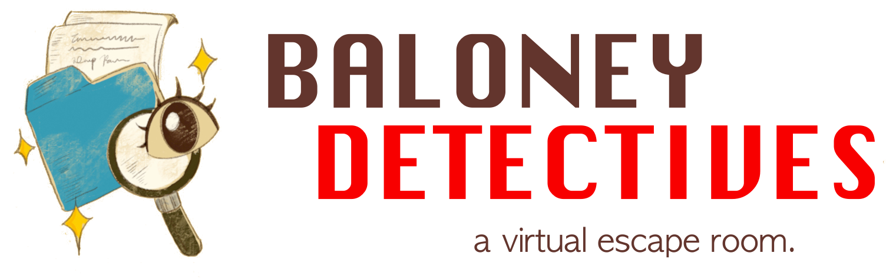

Here are some projects I've worked on for school, work, or fun.
Click each link or image to read about them!
Baloney Detectives: Misinformation Escape Room

Baloney Detectives is a virtual, educational escape room made with the game design platform Twine, which aims to improve teens' Internet literacy through engaging puzzles mirroring real-world social media misinformation.
This game was informed by the practice of value-sensitive design, a flexible approach to design which centers the values of users throughout their usage of products, rather than their end goals with them. My group later presented this project at the UW Information School's MisInfo Day conference in March 2023, where they shouted us out on a GeekWire article.
Aside from viewing our documentation, you can also play the escape room yourself here.
UW Libraries GSRI Redesign
The Graduatae Student Research Institute [GSRI] is a yearly online workshop offered by the UW Libraries' Instructional Design team that introduces the UW Libraries' information services and resources to incoming graduate students. As part of a team project in 2023, I helped review and re-design it to see how it can best serve students' needs in a changing academic landscape.
This included conducting a literature review, reviewing the written content, and changing the method of delivery from Canvas to WordPress.
Spotify Playlist Generator
I recently used my love of music to create a small playlist generator using the Spotify API, with the 20 most-played songs from a specific year, genre, or both. You can view the source code here.